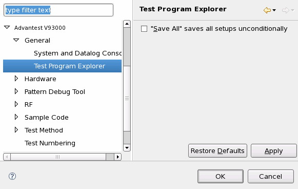

Test Program Explorer preference page
You can change the following preferences on the preference page.
Option |
Description |
|---|---|
"Save All" saves all setups unconditionally |
When you click the Save All icon on the Test Program Explorer view:
|
The following displays the Test Program Explorer preference page.

Functional changes
- Introduced before SmarTest 6.3.2